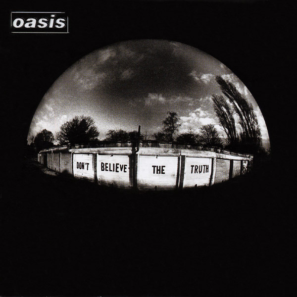

ALBUMS
6TH. Don’t Believe The Truth
영국의 밴드 오아시스의 6번째 정규 앨범. Definitely Maybe의 10주년이 되는 날 발매될 예정이었지만 앨범 녹음 지연으로 결국 그 날에는 DM의 10주년 기념 DVD 발매가 결정되었고, 최종적으로는 2005년 5월 30일에 발표되었다. 프로듀서 데이브 사디와 노엘 갤러거가 공동으로 프로듀싱했다. 오아시스는 3집 이후로 트렌드를 따라가지 못하며 악평을 받은 바 있는데 호불호가 갈리긴 하지만 다시 괜찮은 평가를 받게 된 앨범이며 97년 Be Here Now 발매 이후로 가장 높은 US 차트(12위)에 진입한 앨범이기도 하다. efinitely Maybe를 녹음했던 쏘밀즈 스튜디오에서부터 시작된 첫 레코딩은 Death In Vegas와 합작으로 거의 한 달 여간 진행되었지만 결국 두 번이나 레코딩을 갈아엎었고 약 2년의 시간이 걸렸다. 그렇게 힘든 과정을 거쳐서 나온 앨범은 2005년 가장 많이 팔린 앨범 순위 중 13위를 기록한다. 그리고 2005년 Q 매거진 선정 올해의 앨범 4위, Mojo 선정 올해의 앨범 25위. 그 해의 Q 어워드에서 베스트 앨범 부문과 전부문 최다 득표상에 각각 선정되었으며 이후 2010년에는 Q 매거진 선정 21세기의 톱 앨범 100선 중 41번째에 선정되기도 한다. 오아시스 커리어 사상 최초로 모든 멤버들이 고르게 참여한 앨범으로 서로의 원래 포지션을 넘어서 각자의 역할을 넘나들어가며 작업했으며, 수록된 곡들의 비중도 그 전 앨범들에 비하면 평균 2~3곡씩 각자의 영역을 고르게 배정받은 편이다. 특히 리암 갤러거와 앤디 벨이 전에 비해 크게 기여했다. 노엘은 이 앨범에 대해서 그 동안 있었던 '전형적인 노엘식 오아시스 앨범과는 다르게 들리는 앨범'이라고 코멘트하기도 했다. 실제로 이 앨범은 오아시스의 그 어떤 앨범보다도 어쿠스틱 사운드가 두드러진다.
1. Turn Up The Sun
오아시스 역사상 최초의 '노엘이 쓰지 않은 앨범의 1번 트랙'이다. 이 곡은 앤디 벨이 작곡한 것으로 DBTT 투어 셋리스트에서 오프닝 곡 이후 첫번째로 연주되곤 하였다. 반복되는 'Love one another'은 조지 해리슨의 유언을 가져온 것.
2. Mucky Fingers
노엘 갤러거 작곡. 노엘은 원래 첫 싱글로 Lyla 대신 이 곡을 선택하고 싶어했으나 유통사인 소니뮤직과의 마찰로 결국 무산되었다. 휘몰아치는 피아노와 컨츄리에서 따온 듯한 멜로디에서 밥 딜런의 영향을 강하게 받은 곡이다.
3. Lyla
첫번째로 싱글컷된 곡으로 UK차트 1위. 노엘 갤러거 작곡. US 모던록 차트에 31위로 진입해 19위까지 올라가기도 했다. 처음에는 노엘이 이 곡을 별로 마음에 들어하지 않았기 때문에 데모까지만 작업하고 묵혀두고 있었는데, 때문에 하마터면 앨범에 실리지도 못할 뻔했으나 유통사인 소니뮤직 측의 강력한 주장으로 간신히 첫번째로 싱글컷되었다. 이 곡에 대해 노엘이 말하길 "난 이 곡을 처음으로 라이브로 연주하기 전까지는 이 곡이 얼마나 좋은지 모르고 있었어. 이 곡은 신나게 점프를 하게 만드는 훌륭한 곡이지.“
4. Love Like A Bomb
리암 갤러거와 겜 아처 공동 작곡. 오아시스의 곡들 중 유일하게 멤버 공동 작곡으로 표기된 곡.
5. The Importance Of Being Idle
두 번째로 싱글 컷된 곡으로 UK차트 1위를 기록했으며 본 앨범에서 가장 영국적인 팝송. 노엘 갤러거 작곡. 6집을 레코딩할 당시에 쓰여진 곡으로 곡 자체는 킹크스의 'Dead End Street'의 영향이 느껴지며, 제목은 게으름뱅이가 되는 것의 중요성에 대한 말을 적어놓은 책 제목에서 따온 것이라고 한다. 제목과 어울리게 가사의 화자 또한 지독하게 낙천적인 게으름뱅이. 노엘은 이 곡에 대해 항상 마음에 들어했으며 자신과 어울리는 곡이라며 칭찬을 아끼지 않는다.
6. The Meaning Of Soul
리암 갤러거 작곡. 노엘은 이 곡과 Guess God Thinks I'm Abel, Love Like A Bomb에 대해 호의적인 반응을 보였지만 대체로 앨범 분위기에 비해 곡 선정이 다소 튄다는 평이 많다. 롤링 스톤즈의 'Jumpin' Jack Flash'에서 영향을 받은 것으로 보인다.
7. Guess God Thinks I’m Abel
리암 갤러거 작곡. 단촐하게 시작해서 극적으로 마무리되는 곡. 원래는 이 곡 대신에 Stop The Clocks라는 곡이 들어갈 예정이었으나 결과물이 모두 만족스럽지 않아 결국 앨범 수록곡 목록에서 빠지고 대신 이 곡이 수록되었다고 한다. 리암은 이 곡에서 카인과 아벨의 관계에 형제 자신들을 빗댄 것을 인정했다.
8. Part Of The Queue
노엘 갤러거 작곡. 우유를 사러 마트에 갔다가 사람들이 계산대에 줄을 길게 늘어선 것을 보고 작곡했다고. 줄이 너무 길어 우유를 그냥 들고 나오고 싶었다고 하는데, 이 곡은 그 우유를 위해 바치는 곡이라고 한다.
9. Keep The Dream Alive
앤디 벨 작곡. 전형적인 오아시스식 팝 록이지만 한번도 라이브 무대에서 연주된 적이 없다
10. A Bell Will Ring
겜 아처 작곡. 멜로디가 리암이 작곡했던 Little James와 비슷하다. 링고 스타가 이 앨범에서 가장 좋아하는 곡이라고 한다.
11. Let There Be Love
세번째로 싱글컷되어 UK차트 2위를 기록했다. 노엘 갤러거 작곡. Acquiece와 더불어 몇 안되는 형제 듀엣곡이기도 하다. Standing on the Shoulder of Giants 시절에 이미 데모 버전으로 작곡되어 있었던 곡으로 당시엔 팬들사이에선 It's A Crime이라고 불렸고 가사도 조금 달랐다. 본인은 이 곡을 발라드로 완성해서 앨범에 넣기가 싫었다고 한다.